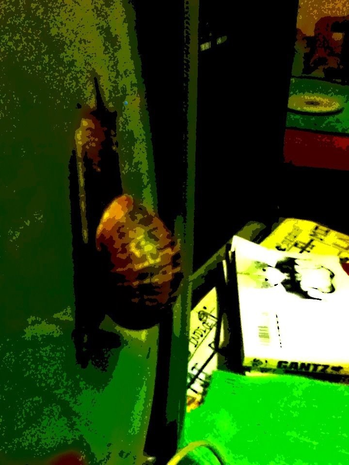

regexp3-go (dia cero)
Hace un año, luego de “maquetar” algunos libros en org-mode, decidi crear mi propio lenguaje de marcas ligeras, con casinos y colegialas japonesas, programar un substituto del comando man/info y aniquilar a html/latex como sistema de documentacion.
Un mes mas tarde fruto de la necesidad de parsear el texto del nuevo lenguaje y mi incapacidad de entender como utilizar una libreria de expresiones regulares, nacio Recursive Regexp Raptor (alias regexp3) que es un motor de expresiones regulares para C, otro mes mas tarde salio a la web la primer version en forma de repositorio en github y ahora… ni hay un nuevo lenguaje, ni un substituto de man/info, ni ha muerto html y he dedicado mas horas de las que jamas pense en regexp3 (y regexp4 “el sucesor”)
Por un mes (entero) intente programar el interprete del lenguaje de marcas ligero y fracase, asi que pase al plan de emergencia, ver como estaban hechos otros interpretes como el de org-mode o el de reStructured Text, lo que trajo un nuevo problema: aprender (e)lisp o aprender python(2|3).
Lo primero implicaba aprender ingles, encortrar un buen libro y ponerme a traducir cosas, lo segundo encontrar un buen libro (e intentar por segunda vez con python), termine llendo por la primer opcion y cuando llego la desesperacion se mezclo con la segunda.
Lisp es interesante, asombroso en su simplesa e incomodo en su escritura
Python… no puedo con python, lo encuentro aburrido, un pegote de muchas cosas en un mismo lenguaje e indentar a mano pelada por ahorrar unas llaves es un sufrimiento carente de toda elegancia
en fin, que no aprendi mucho de nada… cerca de octubre del año pasado con la inquietud de hacer un blog (de nuevo) y tras probar algunos cms llege a hugo, me parecio que era sencillo y digno de investigacion, luego de un par de semanas nacio este blog y decidi aprender algo de su motor de renderizado markdown llamado blackfriday…
entonces? habia que aprender go
entonces? mas ingles (solo hay una pequeña guia traducida al español aqui)
y haci, pase a buscar un pdf en la web, aparecio The way to go, luego de unas semanas viendo ejemplos y como no hay mejor manera de apreder algo que ponerlo en practica, comenzo el port de lo unico que entiendo a la perfeccion y estoy orgulloso, asi es, el motor de expresiones regulares (terminen con mi sufrimiento)
De momento funciona, aunque no es mas que una copia medio usable de C a Go, sin ninguna orientacion a objetos.
Hace ya unos años que di un recorrido ninja por sdl 1.2 y C++ (deitel y como pensar en c++) medio aprendi algo de OO, pero di media vuelta hacia atras, tome el C de k&r (+ deitel), algo de ncurses y prometi no programar nada hasta no dominar C.
asi que? no me acuerdo de como programar OO
y que con go? podria ser un buen sucesor de C, si tubiese punteros de verdad,
cadenas de caracteres de verdad, un tipado menos estricto, pero sobre todo, si
presindiera de su estupido autoformateo, guia de estilo y llaves para
instrucciones simples, te maldigo gofmt!
y regexp3-go que? aqui, algo mas de informacion en el readme
que sigue? transitar la aleatoriedad.
Bueno hasta aqui con mis cosas, pronto (una semana, un mes o mas) una version simplificada del lenguaje de marcas ligeras.
